Category: Items & Technology
Category: Items & Technology
Sacred apps, ancient phones, multiverse navigators and the 3 year contract plan from Verizon. · 93 pages
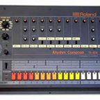
Dunder Mifflan808s and ApocalypsesThe drop heard across all multiverses.Chris OriginsApple PodcastsThe first church of Chris.Dunder MifflanBluetooth-Enabled GargoylesGothic architecture, wireless edition.The Epic of VinnyCaptain Gaster's SpyglassUsed once. Resulted in fleeing.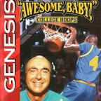
Chapter 4+.1+.1…Dick Vitale's Awesome BabyThe weapon that works on Spamton NEO. The Flashback ChapterDiet Dr PepperDayum, this is ice cold.The Flashback ChapterDoritosGrub. Dust. Bass.The Epic of VinnyDouble Whopper with CheeseThe Kanye System's favorite order. 98.578462849224% of the time.Chris OriginsFacebook (Pre-Cringe)Prize possession of the Projects. Stored on 67 GB of hope.Chapter TriangleFortniteFortnite shows up across the canon more than almost any other video game except Call of Duty.…
The Flashback ChapterDiet Dr PepperDayum, this is ice cold.The Flashback ChapterDoritosGrub. Dust. Bass.The Epic of VinnyDouble Whopper with CheeseThe Kanye System's favorite order. 98.578462849224% of the time.Chris OriginsFacebook (Pre-Cringe)Prize possession of the Projects. Stored on 67 GB of hope.Chapter TriangleFortniteFortnite shows up across the canon more than almost any other video game except Call of Duty.…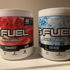
Chapter TriangleG FuelThe post-regicide refreshment of choice.Chapter the FourthGalaxy Gas+40% engine performance. A gift. Chapter 4+.1+.1…Gex: Enter the GeckoThe storm of box art.
Chapter 4+.1+.1…Gex: Enter the GeckoThe storm of box art.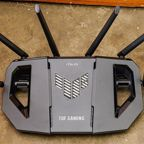
The Flashback ChapterGod's RouterOne tower. Full bars.Chapter 4+.1+.1…Hantavirus VaccineRFK's sidearm.Chapter 4+.1+.1…"I Can't Put Down the Cup"“I Can't Put Down the Cup” (written in the book as “I Can’t put down the Cup”) is the song Son…Chris OriginsIMDbSite of the review bomb.Dunder MifflaniPhone 3GSideways. Cracked. Plays U2 on loop. Never update.Chapter 4+.1+.1…KromerKromer, always written in brackets as [kromer], is the currency Alpha Mogger Beta earned from…Dunder MifflanLaugh.exeDo not run.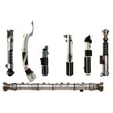
Chapter 2LightsaberPairs well with 4 Red Bulls.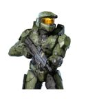
Chris OriginsMaster ChefKitchen appliance of cosmic scale.Chapter the FourthMcQueen's Glock 19Used once, for chicken.Chapter 2Medea's Tesseract Dimension ShipFour dimensions. At least. Chapter the FourthMercedes Benz System CruiserUnderpowered, cramped, no USB port. Beloved.
Chapter the FourthMercedes Benz System CruiserUnderpowered, cramped, no USB port. Beloved.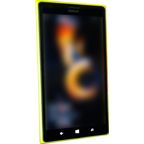
Chapter 4+.1+.1…MF Vroom's Windows PhoneMF Vroom's Windows phone is the personal phone of MF Vroom. It rings with a Peter Griffin…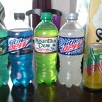
The Flashback ChapterMountain DewSuper human, or super dead.Chris OriginsMySpaceAncient platform. Relic. Battlefield of beef.The Flashback ChapterNFTs (Mysterious Apes)Mysterious apes on a bitcoin wallet.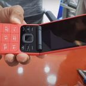
Chapter TriangleNokia I-4500 Flip PhoneThe only phone you can fight Chris with. At first, anyway. Chapter TriangleOilThe resource behind more of the plot than you'd think.
Chapter TriangleOilThe resource behind more of the plot than you'd think.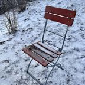
Chapter 4+.1+.1…Plankton's Metal Folding ChairAverage sized. Above-average commitment.The Epic of VinnyPretzel-Bun BaconatorThat's Wendy's thing.Chapter the FourthPrime Energy DrinkSuper baller.Chapter the FourthPropaneAnd propane accessories.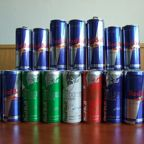
Chapter 2Red BullFour cans and a lightsaber: the standard senatorial loadout.The Epic of Vinny"Rum & Coke"In quotes, in the story. Gives Gaster the wiggle.Chris OriginsSettingsThe ani-social media platform.The Flashback ChapterSnapchat: Ghost Protocol EditionShould you choose to accept it.Chapter 4+.1+.1…Solidified Purple JuiceSolidified purple juice is the ammunition of the trunk-mounted machine gun in Son's 2005 Honda…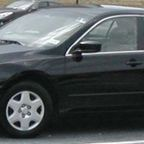
Chapter 4+.1+.1…Son's 2005 Honda AccordSon's 2005 Honda Accord (his “whip”) is the getaway car of the Spaceport Breakout. With Police…The Epic of VinnySuper Smash Bros. for the Wii UThe game that decided the fate of the world.Chapter the Maybe SeventhT1 PhonesStandard Kirk issue. Chapter 4+.1+.1…Tesla 2028 RoadstersTwo, from Elon.
Chapter 4+.1+.1…Tesla 2028 RoadstersTwo, from Elon. Chapter TriangleThe 3 Year Contract Plan from Verizon for Unlimited Talk and TextThe most valuable relic within 3 light years.
Chapter TriangleThe 3 Year Contract Plan from Verizon for Unlimited Talk and TextThe most valuable relic within 3 light years.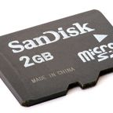
Chapter 4+.1+.1…The 67GB MicroSD CardThe 67GB MicroSD Card is the storage medium holding Facebook (Pre-Cringe), one of the apps the…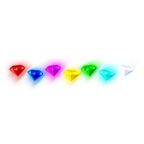
Chapter TriangleThe 7 Chaos EmeraldsMaking Obama impossible since Chapter Triangle.Chapter the Maybe SeventhThe AirTagTargeting beacon. Not for luggage.The Epic of VinnyThe Bagel Man's CloakWhite, with the Dunkin Donuts logo on the chest.Dunder MifflanThe Bible of Battle PassesScripture, Season 1 through Season ∞.The Epic of VinnyThe BLACK KNIFECapital letters. Hits for the ship's honor.Chapter the FourthThe Blue DustGoober-inducing.The Flashback ChapterThe Casino StatuesPart of the decor.Chris OriginsThe Chalkboards of EarthMooshed. Chapter the FourthThe Crack Van (RV of Time)Hyperspace-capable. Oil-dependent.Chapter Number New JerseyThe Custom Lambo TonkaDrove up behind them. Became a boxing ring.The Epic of VinnyThe Dunkin Cult CruiserA giant ship built from destroyed data centers.Chapter Number New JerseyThe Flashlight and the Covid MaskIf you can use these effectively, then you have a chance.The Epic of VinnyThe Fork in the RoadA fork, at a fork in the road. The story knows.The Epic of VinnyThe ForkliftNobody on this page is forklift certified.Chapter Number New JerseyThe Golden PlaqueWhoever spends 5 nights at Freddy's shall receive Snapchat.The Flashback ChapterThe Golden SCARCasino-issued. No fear.The Epic of VinnyThe Great Double Whopper with CheeseA power. Not found in any galaxy. Flows through Vinny, eventually.Chapter the Maybe SeventhThe IbeamEMP first. Haircut second. Vault third.Chapter the Maybe SeventhThe IgunApple's take on sidearms.The Flashback ChapterThe InavA multiverse navigator that just works.Chapter Number New JerseyThe Infinity BladesWhat Yeat and Quandale Dingle jumped the gang with.
Chapter the FourthThe Crack Van (RV of Time)Hyperspace-capable. Oil-dependent.Chapter Number New JerseyThe Custom Lambo TonkaDrove up behind them. Became a boxing ring.The Epic of VinnyThe Dunkin Cult CruiserA giant ship built from destroyed data centers.Chapter Number New JerseyThe Flashlight and the Covid MaskIf you can use these effectively, then you have a chance.The Epic of VinnyThe Fork in the RoadA fork, at a fork in the road. The story knows.The Epic of VinnyThe ForkliftNobody on this page is forklift certified.Chapter Number New JerseyThe Golden PlaqueWhoever spends 5 nights at Freddy's shall receive Snapchat.The Flashback ChapterThe Golden SCARCasino-issued. No fear.The Epic of VinnyThe Great Double Whopper with CheeseA power. Not found in any galaxy. Flows through Vinny, eventually.Chapter the Maybe SeventhThe IbeamEMP first. Haircut second. Vault third.Chapter the Maybe SeventhThe IgunApple's take on sidearms.The Flashback ChapterThe InavA multiverse navigator that just works.Chapter Number New JerseyThe Infinity BladesWhat Yeat and Quandale Dingle jumped the gang with.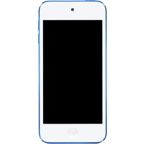
Chapter the Maybe SeventhThe iPod TouchCooked eggs. Played Geometry Dash. Simultaneously.Dunder MifflanThe Lobby File CabinetGalactic records management.Chapter 4+.1+.1…The Modded Colonial MusketThe Modded Colonial Musket is the weapon of Son S. Sonionring. He takes it out at the Projects…The Epic of VinnyThe Mystery MachineStolen from Scooby-Doo and Shaggy for literally no reason.Dunder MifflanThe OpenAble Door™Extremely openable. Trademark pending.Chapter TriangleThe PagerHoard smoke detectors. Don't ask why.Dunder MifflanThe Prius of DestinyKanye's ride. Parking: next to the trash.Chris OriginsThe Sacred AppsThe canonical app store of destiny.The Epic of VinnyThe Shadow CapeStrength and flight. Sewn from literal shadows.Chapter TriangleThe Tesla-Sponsored MotorcadeReady for departure.The Epic of VinnyThe UHA Ford-F150Red, white and blue. Plate: FR33D0M. Flies straight up.Chapter 4+.1+.1…The Ultra HandA giant one.Chapter the Maybe SeventhThe Ultra Mega Uber Cool FaceTime LaserUltra. Mega. Uber. Cool. Chapter 4+.1+.1…The Wii CubeA giant box made out of Wii games.Chris OriginsTruth SocialThe best social media platform above them all (per Trumpy).Chris OriginsTwitter / XUnder 100 followers. Not verified.Dunder MifflanVineSix seconds. Forwards or backwards.The Epic of VinnyVinny's 5 Below WatchTells him when to clean the freezer.The Epic of VinnyVinny's Titanium ArmorPure titanium. Light as a feather.The Epic of VinnyVinny's Vibrant SwordGlows with a color that doesn't exist.The Epic of VinnyWii PlayHas a secret bug in its code. Please buy a copy.The Epic of VinnyWordleClaude likes it. Aesop and Del failed it. Everyone is in.Chapter 4+.1+.1…XP CandyXP candy was the product behind Alpha Mogger Beta's campus business at Darkworld State…Chapter the FourthYe the GasNo watered-down trash. (Disputed.)Dunder MifflanZuck Tears USBDo Not Install. (They installed it.)
Chapter 4+.1+.1…The Wii CubeA giant box made out of Wii games.Chris OriginsTruth SocialThe best social media platform above them all (per Trumpy).Chris OriginsTwitter / XUnder 100 followers. Not verified.Dunder MifflanVineSix seconds. Forwards or backwards.The Epic of VinnyVinny's 5 Below WatchTells him when to clean the freezer.The Epic of VinnyVinny's Titanium ArmorPure titanium. Light as a feather.The Epic of VinnyVinny's Vibrant SwordGlows with a color that doesn't exist.The Epic of VinnyWii PlayHas a secret bug in its code. Please buy a copy.The Epic of VinnyWordleClaude likes it. Aesop and Del failed it. Everyone is in.Chapter 4+.1+.1…XP CandyXP candy was the product behind Alpha Mogger Beta's campus business at Darkworld State…Chapter the FourthYe the GasNo watered-down trash. (Disputed.)Dunder MifflanZuck Tears USBDo Not Install. (They installed it.) The Flashback ChapterZynHas its own locker.
The Flashback ChapterZynHas its own locker.Nothing matches. Much like Mic Q.